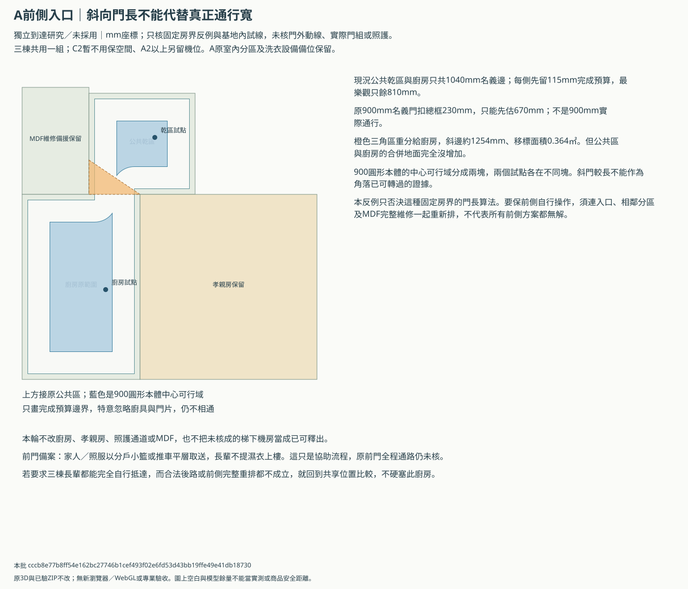
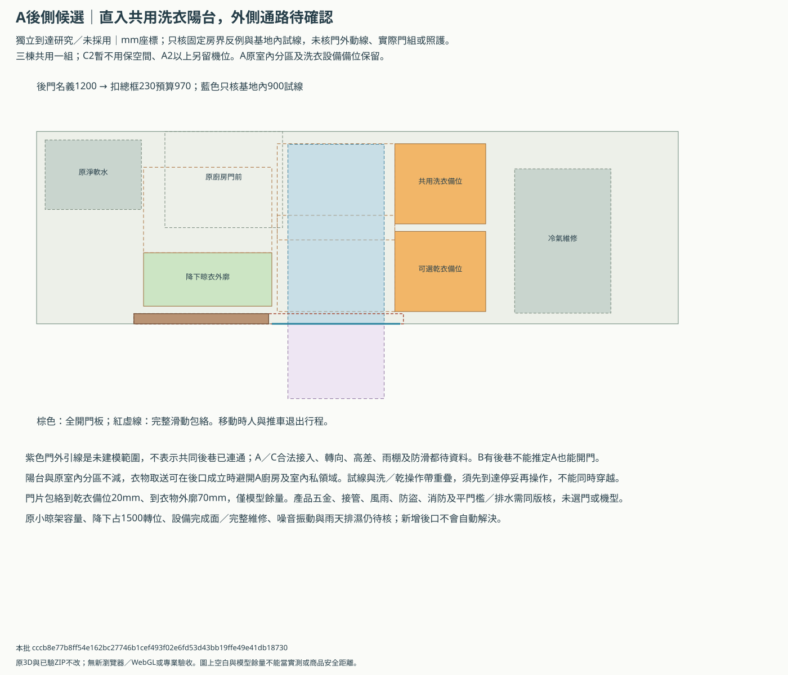
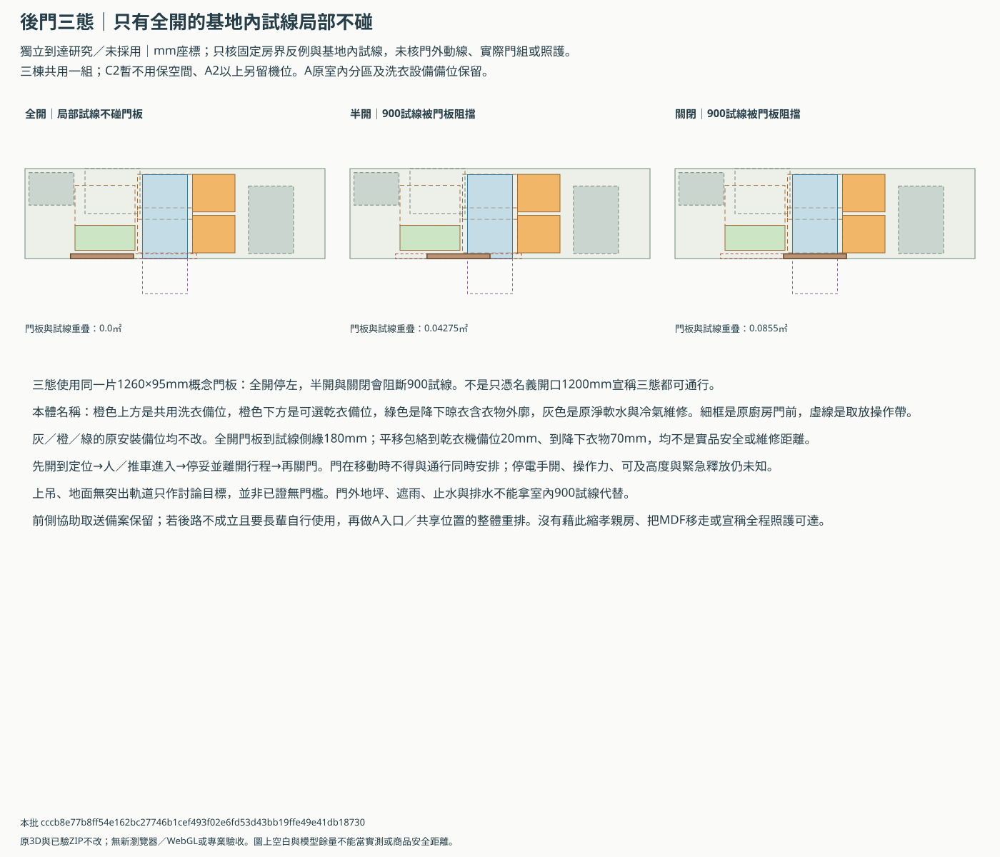

共用洗衣到達：前側瓶頸與條件式後口
獨立研究／未採用。三棟一樓共用一組、C2先暫不用保空間、A上層另留機位。沒有選定A為正式共用位置，原室內分區、洗衣預留與已驗3D不改。
先保A1原陽台洗衣配置，優先向建商確認A後側是否能作合法平層直入；成立時才深化這個可關門候選。沒有共同後側到達，就保前側分戶小籃／推車取送並回到A整體入口重排，不強迫長輩走未核的窄廚房，也不自行縮孝親房或釋放MDF。
斜門候選的三角區重分沒有增加可走地面；1040mm共邊扣兩側115mm只剩810mm，900圓形本體中心無法連通。這否決該斜門算法，沒有宣稱所有前側重排無解。
後口全開時，900試線在基地內可避列明本體；門外0.63㎡試線未核。洗／乾操作仍共用，須分時。A後口與共同後路尚無權利、高差及遮雨依據，不能當全程長輩自行可達。
前側固定房界反例


條件式後口與原陽台


同門全開／半開／關閉


三態核算
| 狀態 | 與900試線重疊㎡ | 本輪結果 | 完整通路 |
|---|---|---|---|
| 全開 | 0.0 | 基地內局部不碰 | 未核 |
| 半開 | 0.04275 | 阻擋 | 未核 |
| 關閉 | 0.0855 | 阻擋 | 未核 |
與建商／A設計師先核
- 三棟共用一組、C2暫不用保空間、A上層另留機位保持；這一輪不選A主位置、機型或購機。
- 原廚房、孝親房、MDF側壁龕備援與完整維修、樓梯、客餐、騎樓、B祭祀搬轎兩版保持；不改主3D或已驗ZIP。
- 後門開口在A研究框的後邊界，並不代表已獲開口或共同後巷使用權；B有後巷不等於A／C都可接入。
- 路徑包含一段未建模門外引線，只核其裁切在基地內的部分；不核外側輪具轉向、距離、避車、路權、高差或全程可達。
- 名義1200門口扣總框230只作970預算；單扇1260×95門板與2520滑動包絡未選商品，不當消防、防盜、操作力、可及或淨高核可。
- 門板移動包絡到原乾衣機備位只有20mm，實際五金或接管變大要重排；衣物外廓到門包70mm也不是原廠安全距離。
- 全開的基地內試線仍與洗／乾操作帶共享，須分時；不是多人同時洗衣或無障礙簽認。門在移動時人與推車先退出行程。
- 獨立後門改善取送方向，不會增加1200小晾架容量或解除原晾衣降下占1500轉位、原設備完成面及維修缺口。
- 前側分戶取送只是工作流程備案，不是已核前門照護通路；若長輩要完全自行操作而通路仍不成立，必須重排共用位置。
- 斜向前門反例只核一種固定房界；不把它擴大為A或全案無解。廚房是否一定可關門未收到新答覆，仍保原門，不代填偏好。
回饋繼續用原生活走查ABC-DAILY-CHAIN及建商動線問題列；沒有新增一套必填程序。下列19欄實際條件全空，另存私人副本後按圖號、版次與依據填寫；不自動套圖。
actual-conditions-template.json／actual-conditions.csv／review.json／artifact-manifest.json
本批 cccb8e77b8ff54e162bc27746b1cef493f02e6fd53d43bb19ffe49e41db18730；15項父來源逐一核對，靜態幾何不是商品、使用或專業核可。